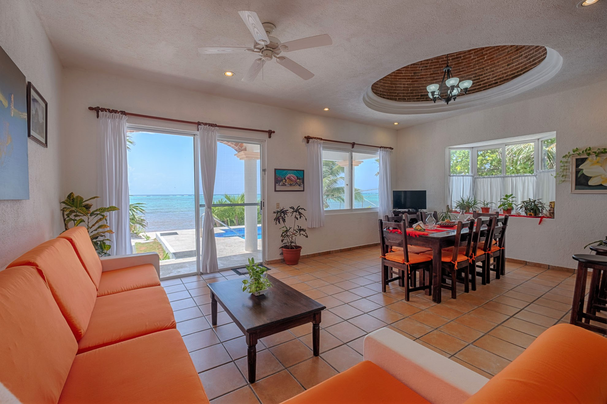
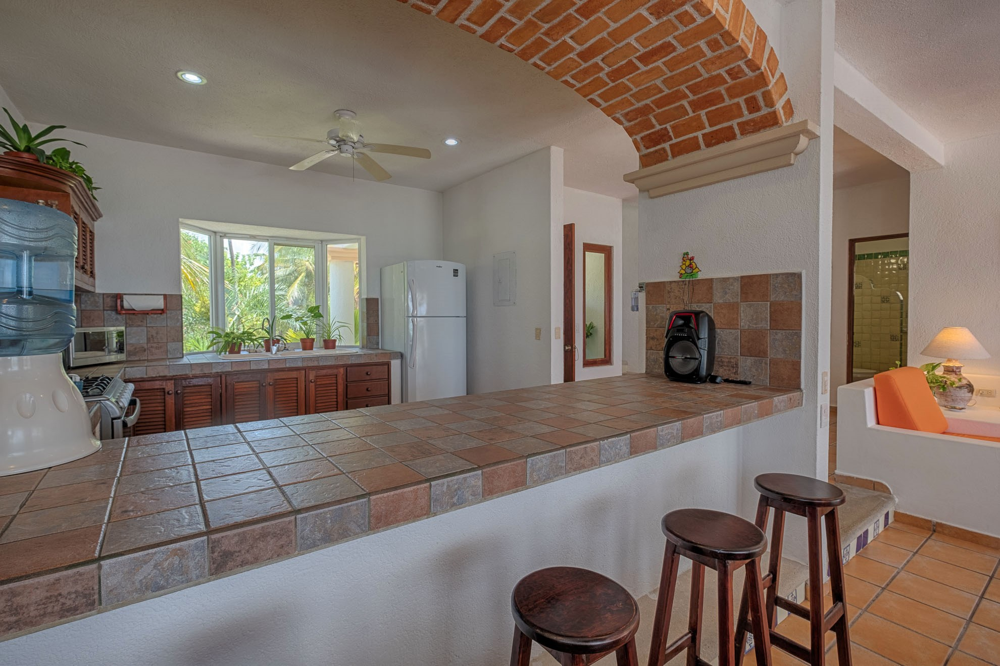
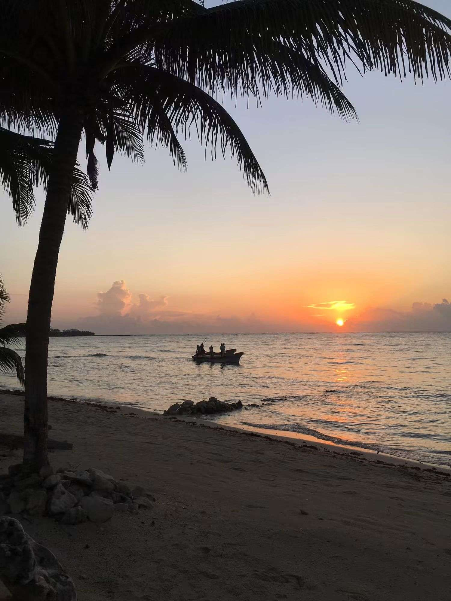
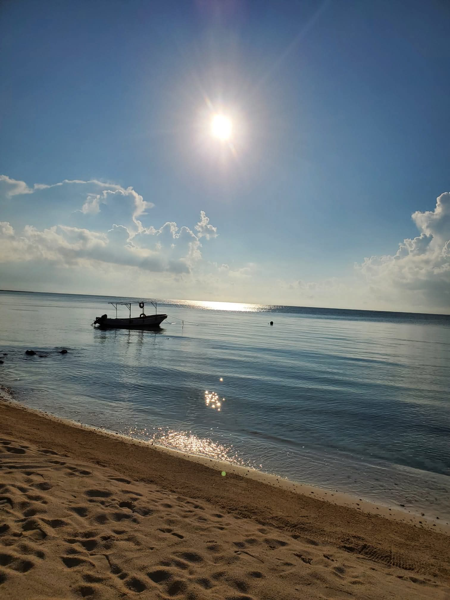
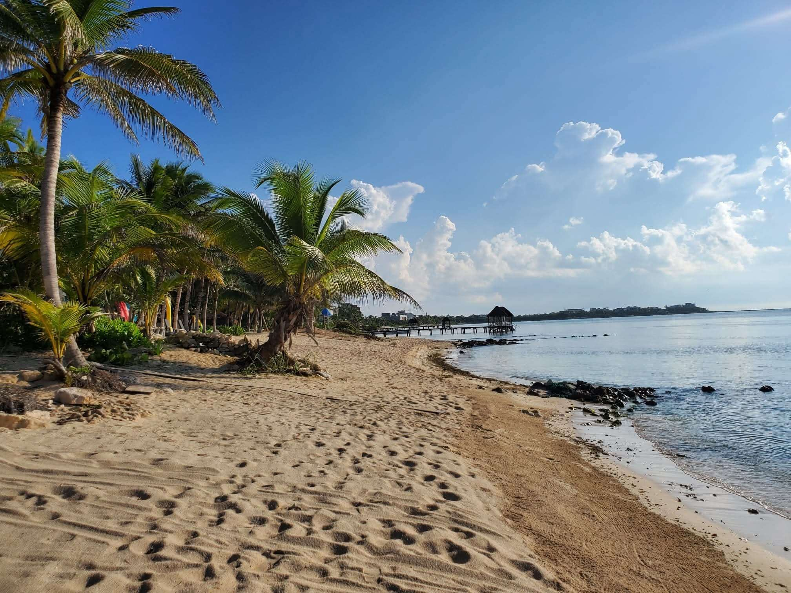
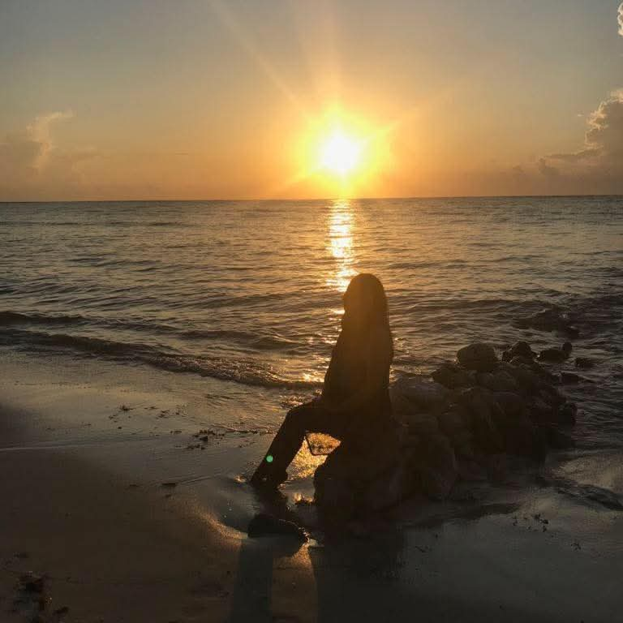

The Property Blueprint
Every detail curated to provide a flawless, luxurious beachfront escape.

Villa Comforts
- Full Air Conditioning: High-efficiency cooling units in all three bedroom suites.
- High-Speed Wi-Fi: Continuous internet coverage throughout the interior spaces and pool decks.
- Satellite Television: Flat-screen entertainment hub in the open-concept living lounge.
- Daily Maid Service: Immaculate house cleaning included 6 days per week, along with provided linens.
- Secure Property Safes: Dual guest safes installed to guard your personal valuables safely.
- Pet-Friendly Estate: Well-behaved animals are welcome to join your private beach escape (please notify us upon inquiry).

The Chef's Kitchen
- Purified Drinking Water: Centralized Microdyne system providing endless fresh drinking water.
- Premium Kitchen Appliances: Full-sized refrigerator, microwave, toaster, coffee maker, and blender.
- Breakfast Bar Island: Spacious counter seating perfect for social cooking or morning coffee.
- Full Cookware & Utensils: Stocked completely with premium pots, pans, glassware, and essential spices.
- Stovetop Range & Oven: High-output gas burners and full baking setup for family meal preparation.

Beach & Adventure
- Oceanside Swimming Pool: Pristine, private beachfront pool positioned steps from the surf line.
- Complimentary Sea Kayaks: Includes 1 single and 1 double kayak with adult & child lifejackets.
- Bespoke Beach Setup: Luxury lounge chairs, shade umbrellas, and plush beach towels provided daily.
- Outdoor Rinse Shower: Convenient freshwater shower station right on the deck to rinse off beach sand.
- Gated Private Parking: Secure, on-site driveway parking space with room for up to 4 vehicles.
Tankah Bay Experiences
Immerse yourself in the majestic natural wonders sitting right outside your door.

The Coral Reef Lagoon
Tankah Bay is protected by an outer coral reef barrier, keeping the coastal waters completely calm, shallow, and safe. Launch our complimentary sea kayaks straight from the white sand to snorkel alongside tropical fish and sea turtles in crystal clear water.

Cenote & Mangroves
Walk just down the beach to dive into one of the Riviera Maya's most famous open-air freshwater cenotes. Swim or paddleboard through an emerald jungle mangrove river system where cool, refreshing freshwater flows directly out into the ocean surf.

The Ruins of Tulum
Explore rich pre-Columbian history at the world-famous Tulum archaeological site. Perched dramatically on rugged limestone cliffs directly overlooking the turquoise Caribbean sea, this ancient walled Mayan city provides breathtaking cultural excursions.